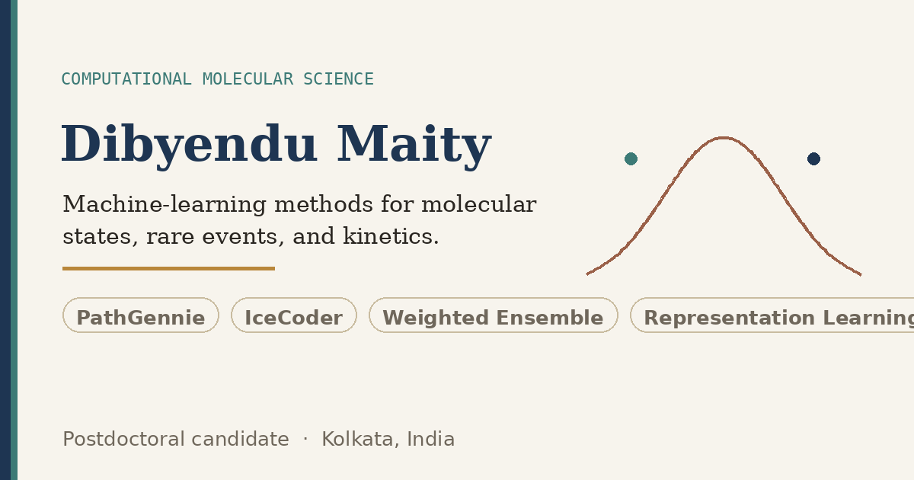

Computational Molecular Science
Machine-learning methods for molecular states, rare events, and kinetics.
I develop interpretable simulation and data-driven methods for identifying molecular states, generating transition pathways, and estimating kinetics from molecular dynamics.

Featured Research
All case studies →Selected Publications
View all 10 papers →News & Updates
- Ph.D. thesis submitted to the University of Calcutta. Available for postdoctoral positions.
- Paper on pathway-controlled phase separation published in Angewandte Chemie International Edition.
- CoWERA paper on temporal coherence guided binless resampling accepted in The Journal of Chemical Physics.
- IceCoder talk presented at the National Conference on Molecular Simulation (NCMS), IIT India.
- PathGennie and IceCoder papers published in Journal of Chemical Theory and Computation.
Interested in collaboration or postdoctoral research?
Ph.D. thesis submitted. Available for postdoctoral positions from Late 2026.
Research Case Studies
Postdoctoral Research Fit & Future Directions
Focusing on three core computational programmes connecting previous Ph.D. foundations to future host laboratory directions:
Publications & Preprints
Scientific Software
About & Academic Background
Dibyendu Maity
Computational Molecular Scientist
S. N. Bose National Centre for Basic Sciences, Kolkata
Research Statement
I develop interpretable, physics-grounded computational methods at the intersection of molecular dynamics, enhanced sampling, and machine learning. My work addresses a recurring bottleneck in molecular simulation: bridging the gap between the femtosecond timestep of atomic forces and the micro- to millisecond timescales at which biologically and chemically relevant events — conformational changes, nucleation, ligand binding — actually occur.
During my Ph.D., I built methods that accelerate this process from both ends: representation learning to identify reaction coordinates and structural phases directly from trajectory data (IceCoder), adaptive sampling to steer short parallel simulations toward rare transition pathways (PathGennie, TRAILS-MD), and kinetics estimation through weighted-ensemble resampling with temporal coherence (CoWERA).
I am motivated by problems where data-driven models must respect physical symmetries, conservation laws, and thermodynamic consistency — not just minimise loss functions. My postdoctoral research vision focuses on physics-aware molecular representation learning, scalable adaptive sampling for drug discovery, and trajectory-resolved kinetics for complex biomolecular systems.
Research Interests
Education
Ph.D. in Physics (Theoretical)
University of Calcutta / S. N. Bose National Centre for Basic Sciences, Kolkata
Thesis: Development and Application of Machine Learning Approaches for Prediction, Identification and Sampling Problems in the Field of Molecular Modeling and Simulation
Advisor: Prof. Suman Chakrabarty
Thesis SubmittedM.Sc. in Physical Sciences
University of Calcutta / S. N. Bose National Centre for Basic Sciences, Kolkata
Integrated Ph.D. Programme · First Class (79.80%)
B.Sc. in Physics (Honours)
Midnapore College (Autonomous), West Bengal
First Class Honours in Physics
Contact & Collaboration
I am actively seeking postdoctoral positions in computational molecular science, molecular simulation, and machine learning for chemistry. Please reach out for research discussions, collaboration, or opportunities.
dibyendumaity1999@gmail.com
Google Scholar
33 Citations · h-index 4
GitHub
dmighty007 · TeamSuman
ORCID
0000-0002-XXXX-XXXX
Institutional Affiliation
Department of Chemical and Biological Sciences
S. N. Bose National Centre for Basic Sciences
Block JD, Sector III, Salt Lake, Kolkata 700106, West Bengal, India